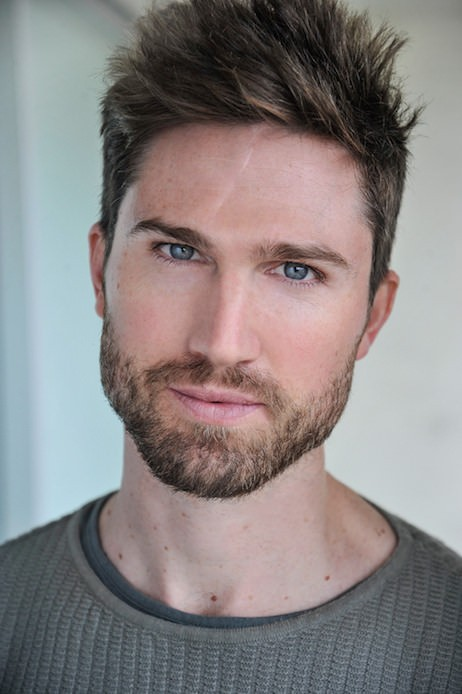

REDISCOVER YOUR INNATE VOCAL FREEDOM, AND LEARN TO COMMUNICATE WITH CONFIDENCE, CLARITY AND PRESENCE.
Every human voice is teeming with exciting potential waiting to be awakened, galvanised and released. This is the voice we were born with – our natural speaking voice. But over time unhelpful habits can get in the way of our full realization of
this potential. Through a series of tailored sessions with a qualified and internationally experienced voice and acting coach you can rediscover your true vocal power – whether you’re in the theatre, the classroom, the spin studio, the boardroom,
or at home with the kids. You’ll learn simple yet effective techniques to help you free, strengthen and enrich your voice, as you enhance your innate ability to communicate with ease.
SESSIONS
HOW CAN VOICE COACHING HELP ME?
No matter what your line of work – whether you’re an actor, teacher or business professional – voice coaching can help you speak with presence and confidence. In the past I’ve worked with clients on the following:
Roles and auditions
Dialect acquisition
Script analysis
Presentations
Meetings and pitches
Workplace communication
Speeches and lectures
Interviews and press conferences
Vocal health and fitness
SESSIONS
WHAT'S A VOICE COACHING SESSION LIKE?
You can join a group workshop, take part in one-on-one sessions, or choose a combination of both.
One-on-one sessions allow for an in-depth investigation into your voice and body use, and are tailored to individual needs.
Group workshops are designed to suit the needs of a specific troupe of individuals, or a mix of like-minded people keen on developing their voices.
All sessions are relaxed, fun, informative, and ego-free.
SESSIONS
WHAT WILL I LEARN?
Depending on your needs, your session may focus on:
Techniques to reduce the risk of dysphonia and other voice conditions
Acting techniques that enhance vocal freedom and individual expression
SESSIONS
WHERE DO YOUR VOICE COACHING SESSIONS TAKE PLACE?
All group workshops are held in-house, or at a location agreed on between us.
Private sessions are held in a convenient city location, or at my studio in Neutral Bay.
SESSIONS
HOW MANY SESSIONS WILL I NEED?
Voice work can be as energizing and liberating as any other kind of physical exercise. And just like other physical exercise, it’s an ongoing journey. But while I suggest you join me for ongoing sessions to truly discover your vocal
potential, even one private class can equip you with the skills to radically improve your voice.
Individual sessions are usually 1-2 hours, group sessions are a minimum of 2 hours.
I also run half-day, full-day, and weekend intensives.
I offer a complimentary 15-minute consultation over the phone, FaceTime, Zoom or Skype, so we can have a chat about your goals, and develop a clear sense of whether we’re a good fit!
PRICING
My pricing is offered on a sliding scale, depending on individual needs and number of sessions.
Please get in touch to discuss a package suitable to your needs.
I offer multi-session passes for both group and one-on-one coaching, which is a cost-effective and vocally-effective option.
I’m looking forward to hearing from you.
ABOUT ME

I'm Rob, an experienced voice and acting coach based in Sydney, Australia. I work with performers and non-performers alike, applying principles of actor training to help people rediscover their innate vocal freedom.
I hold a Master of Fine Arts in Voice from the National Institute of Dramatic Art (NIDA) and a Bachelor of Arts from The University of Melbourne. I'm also a graduate of the Atlantic Acting School's Professional Conversatory in New York City,
and have worked extensively as an actor and teacher both here in Australia and overseas.
My experience includes residencies at some of the world's top acting conversatories, such as NIDA, Yale School of Drama and Carnegie Mellon School of Drama. When I'm not coaching privately, I teach voice on the Bachelor of Fine Arts (Acting)
and Master of Fine Arts (Voice) courses at NIDA.
TESTIMONIALS
WHAT ARE PEOPLE SAYING?
Rob is a curious, intelligent, kind, and creative teacher. The exercises he employs are practical, effective, and highly useful for anyone wishing to develop their voice, acquire a new dialect, or deepen their psycho-visceral connection to
text and language.
Beth McGuire Director of Speech & Dialects - Yale School of Drama; Dialect Coach - Black Panther
Rob is a committed and highly effective teacher, who cares deeply about voice and text work. He is exceedingly well organised and focused, and is able to make profound connections for students between practical work and professional needs.
Katerina Moraitis Head of Voice - National Institute of Dramatic Art (NIDA)
TESTIMONIALS
Robert is thoughtful, and engaging, he teaches will skill and precision, and the feedback he offers is succinct and insightful.
Tess Dignan Head of Voice - Shakespeare’s Globe
My sessions with Rob taught me so much about my voice, and gave me the tools I need to speak and present in any context. His tips were educational and practical, and I was able to implement them straight away. I now feel confident in meetings
and in front of large groups, and have my own routine of warming up, which empowers me to be more successful at my job.
Louissa Johnson People and Culture Manager - Sustainable Timber Tasmania
TESTIMONIALS
Rob’s holistic and precise approach to the work in the classroom is a breath of fresh air. His feedback is succinct and to the point, and is backed up not only by the wisdom of a trained actor, but a well-rounded human being.
Trevor Clarida Carnegie Mellon School of Drama
Rob's ability to tackle text, specifically Shakespeare, through a range of physical exercises, really helped me to unpick the intricacies of the syntax and rhythm of text, and break free of my habitual delivery. His informal yet professional
teaching style made it easy to jump straight into the work, and I feel lucky to have had the opportunity to do so.
Nat McCloskey Rose Bruford College
GET IN TOUCH
To begin your journey towards a free and dexterous voice, please drop me a line below. I'll reply as soon as humanly possible, and we can lock in a complementary quarter hour consult.